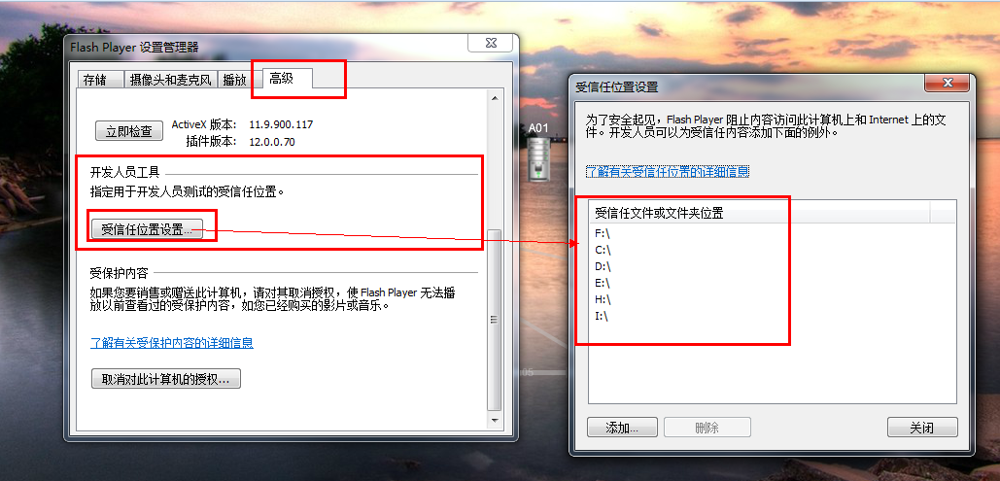

本拓扑图使用flash的cytoscapeweb开源插件制作,并修改了cytoscapeweb的flash源码包
开源项目地址: http://cytoscapeweb.cytoscape.org/
细节: flex版本3.6A
使用技术: flare.swc,pureMVC.swc
CytoscapeWeb工程最好适用于中小型网络，一般高达几百节点和边。
如下是渲染时间的分析图
由于flash有沙箱机制,本地观看flash插件,需要简单设置flash可执行路径当网页打开,右击flash区域,点击全局设置...,然后下面图片说明将本目录存放的盘符填写上,flash就可以正常执行了
